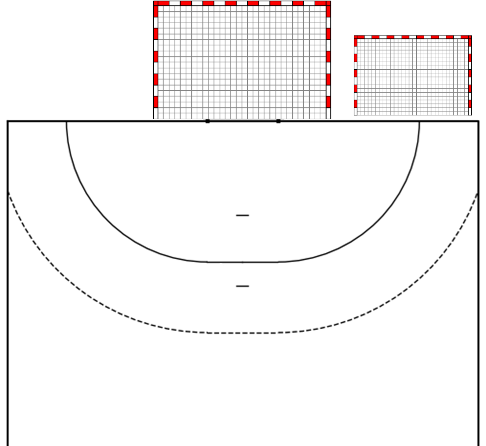

Shot-Position
Tor
Gehalten
Ass
Tor
7g6
TF
| Name | Spielzeit | P | Paraden je Wurfart | Ass | Tor | T | Tore je Wurfart | GS | 7m | 7g6 | TF | Ges. | % | |||||||||||||||||||
|---|---|---|---|---|---|---|---|---|---|---|---|---|---|---|---|---|---|---|---|---|---|---|---|---|---|---|---|---|---|---|---|---|
| RL | RM | RR | K | LA | RA | DL | DM | DR | GS | 7m | RL | RM | RR | K | LA | RA | DL | DM | DR | |||||||||||||

Torwart 1: Miroslavljev
Torwart 2: Ludwig
Shot Statistics – Goalkeeper 1
| Shot Area | Goal Area | Count | Percentage |
|---|